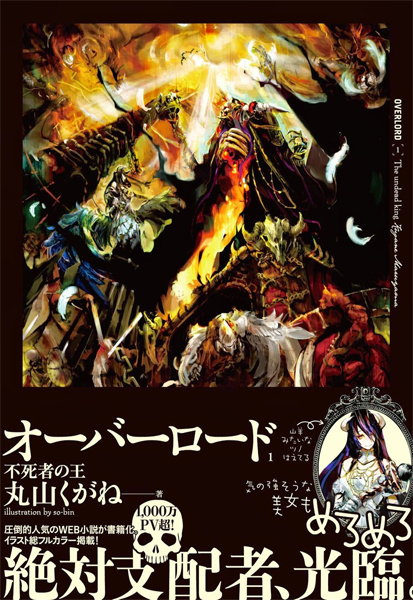
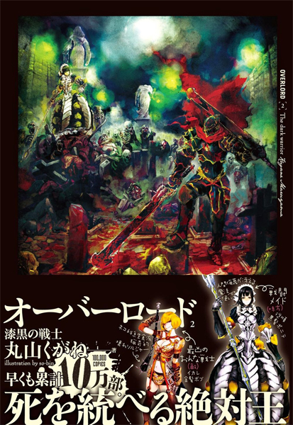
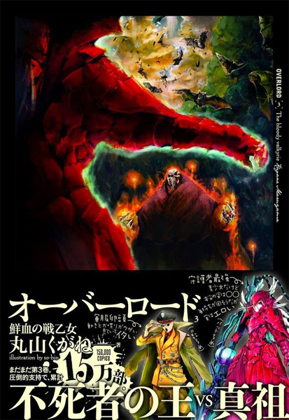
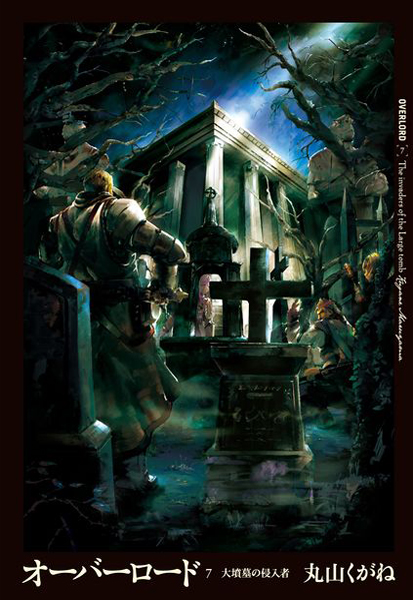
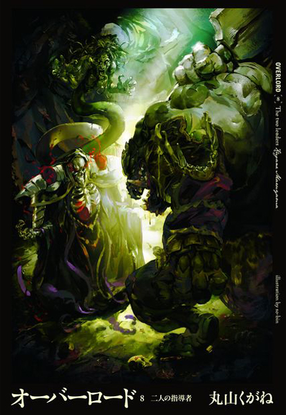
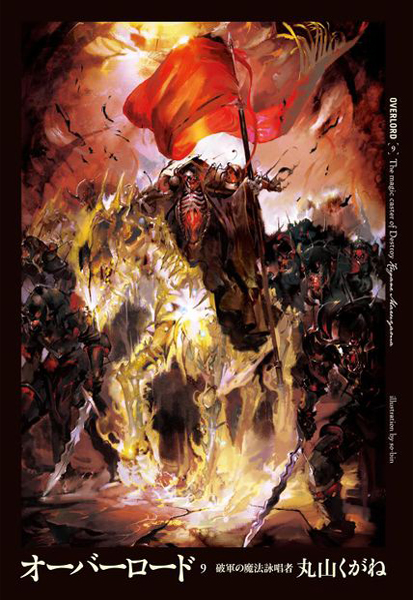
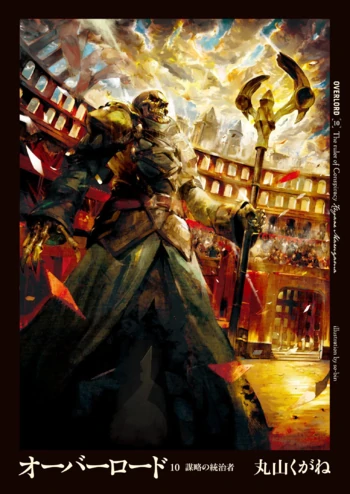

Novelas Ligeras
Overlord 1 : El rey no-muerto

Momonga es un oficinista promedio que pasa la mayor parte de su tiempo jugando al juego YGGDRASIL. Lamentablemente, los servidores de YGGDRASIL están a punto de cerrarse y casi todos los miembros del gremio Ainz Ooal Gown han dejado de jugar desde entonces. Decidiendo permanecer en el juego hasta que el servidor se apague, Momonga se sienta en el trono de la Gran Tumba de Nazarick. Finalmente, el reloj marca la medianoche, pero el juego no lo desconecta, incluso después de el tiempo de finalización del servicio. Los NPC comienzan a tener voluntad propia y se convierte en el mas fuerte hechicero con la apariencia de un esqueleto. ¡La verdadera leyenda de Momonga ahora comienza!
Overlord 2 : El guerrero oscuro

Una semana después de la teletransportación a este mundo desconocido. Ainz Ooal Gown y su doncella de combate, Narberal Gamma se infiltran en la ciudad fortaleza de E-Rantelcomo aventureros. Sus objetivos son recopilar información y ganar fama.Consiguiendo un pedido para recolectar hierbas medicinales, ambos visitan el bosque donde habita la bestia llamada el "Rey Sabio del Bosque". Al mismo tiempo, una influencia siniestra de una orden secreta malvada se acerca a E-Rantel.¡La legión de muertos vivientes controlada por un malvado hechicero y una despiadada guerrera se interponen en el camino de Ainz!
Overlord 3 : La valquiria sangrienta

Ainz Ooal Gown se entera de que su fiel Guardián de piso, Shalltear Bloodfallen, se subleva inesperadamente. ¿Qué pasó exactamente mientras Ainz trabajaba en E-Rantel como aventurero? Él trata de descubrir las razones que hay detrás e intenta obligarla a regresar a Nazarick.¡Una batalla sin precedentes de primera clase! Ainz Ooal Gown vs Shalltear Bloodfallen!
Overlord 4: Los Heroicos Lizard Man

Ainz tiene la necesidad de obtener organismos más fuertes para poder crear muertos vivientes más poderosos. Por lo tanto Ainz pide atacar a los Hombres Lagarto para recolectar sus cadáveres y por lo tanto fortalecer Nazarick.
Los detalles de la historia giran en un lagarto tratando de salvar a su tribu contra las fuerzas de no-muertos de la aniquilación total.
Overlord 5: El Hombre en el Reino - Parte 1
 El reino de Re-Estize está siendo amenazado por " Ocho dedos " que rige la sociedad clandestina. Sebas entra
al Reino para reunir información a pedido de Ainz. El soldado novato, Climb está ansioso por la debilidad de
sí mismo a pesar de su lealtad a la " Princesa de Oro ". Brain Unglaus vuelve a la capital real como una
cáscara vacía al ser testigo del poder abrumador de Shalltear. Con el Reino como su escenario, los tres
hombres se enfrenta a la organización clandestina con su propia creencia!
El reino de Re-Estize está siendo amenazado por " Ocho dedos " que rige la sociedad clandestina. Sebas entra
al Reino para reunir información a pedido de Ainz. El soldado novato, Climb está ansioso por la debilidad de
sí mismo a pesar de su lealtad a la " Princesa de Oro ". Brain Unglaus vuelve a la capital real como una
cáscara vacía al ser testigo del poder abrumador de Shalltear. Con el Reino como su escenario, los tres
hombres se enfrenta a la organización clandestina con su propia creencia!
Overlord 6: El Hobre en el Reino - Parte 2
 Las seis armas , el pelotón de batalla de primera clase de la organización criminal subterránea, ocho dedos
dentro del Reino comienza a moverse. El grupo aventurero Adamantite, " Blue Rose " peleará contra ellos.
Durante la batalla, el misterioso gran demonio, Jaldabaoth comienza a actuar y la llama se eleva en la
capital real por una intensa batalla.
Las seis armas , el pelotón de batalla de primera clase de la organización criminal subterránea, ocho dedos
dentro del Reino comienza a moverse. El grupo aventurero Adamantite, " Blue Rose " peleará contra ellos.
Durante la batalla, el misterioso gran demonio, Jaldabaoth comienza a actuar y la llama se eleva en la
capital real por una intensa batalla.
Overlord 7: Los invasores de la Gran Tumba
 El siguiente paso para Ainz Ooal Gown es hacia el Imperio . Conectados a eso, los " sacrificios " son reunidos a la Gran Tumba. Es imposible escapar de la pesadilla conocida -como Nazarick-, ¿podrían los invasores encontrar el camino para volver vivos?
Overlord 8: Los dos Lideres
 Enri Emmot , que una vez fue salvada por Ainz Ooal Gown, junto al farmacéutico Nfirea viven en Villa Carne custodiados por los duendes sin ningún incidente, pero una nueva amenaza se aproxima debido a la alteración del equilibrio en el bosque por la ausencia del Rey Sabio - "La agitación de Enri y sus días agitados" De las criadas normales a los Guardianes , Ainz dirige a los criados con absoluta fidelidad. Él sugiere ciertas cosas a algunos guardianes incluyendo Mare Bello Fiore . Los días difíciles para el gobernante de Nazarick - "Un día de Nazarick"
Overlord 9: El Hechicero de la Destruccion
 Cada año, la guerra anual entre el Reino y el Imperio parece estar llegando a su fin. Sin embargo, el gobernante del Imperio, Jircniv , también conocido como el "Emperador Sangriento", visita la Gran Tumba de Nazarick y sus aliados con Ainz Ooal Gown, que lo arrastra entre el conflicto de las dos naciones, convirtiéndolo en una guerra total.
Overlord 10: El rey de la Conspiración
 El Rey de la Conspiración es el décimo volumen de la novela ligera de la serie Overlord. Fue lanzado el 30 de mayo del 2016. Detalla la decisión de Ainz Ooal Gown de convertir su reino en una utopía para todas las razas. Mientras tanto, los gobernantes de otros países están tramando oponerse a él y a su nación recién fundada.